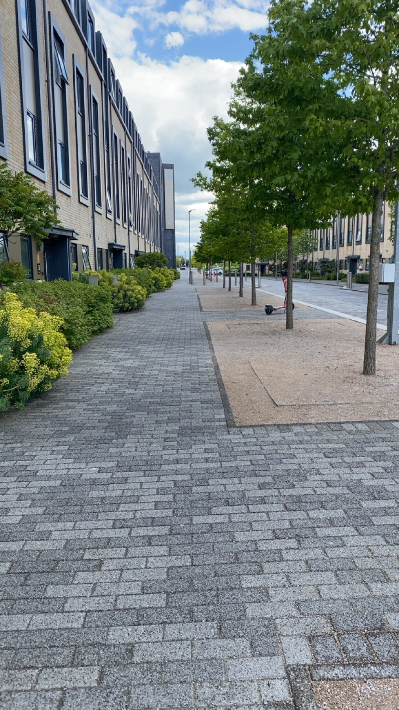

Campaign Element 01

01 — The Role
My role was to visit the university campus and capture the physical environment from the standpoint of a student discovering Red Bull Basement for the first time. This was not simply about taking pictures — it was about understanding how a location shapes story, and how the right environment makes a narrative feel personal rather than staged.
Environment functions as a form of non-verbal communication, conveying mood and context before a single word is spoken.
Mehrabian (1976) Public Places and Private Spaces
02 — Theoretical Framework
03 — Brand Insight
Mintel (2026) reports that campaigns directed towardsGen Z perform significantly better when they reflect genuine environments over aspirational or artificial ones. Red Bull Basement positions itself as a platform for real student ideas — so the campus environment needed to reflect that truth. The visit involved noting natural light, footfall patterns, and how each space would read on camera, moving between creative thinking and practical production logic simultaneously.